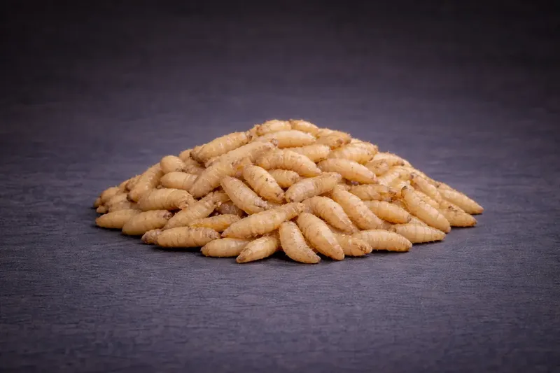

Живые корма
Опарыш
Цена и наличие
- L (белый), л30 BYN / шт.В наличии
- S (белый), л30 BYN / шт.В наличии
- XL (белый), л30 BYN / шт.В наличии
- L (красный), л30 BYN / шт.В наличии
- S (красный), л30 BYN / шт.В наличии
Данные на 23.11.2026.
Описание
Опарыш - это личинка мясной мухи (вторая стадия развития мухи после отложенного яйца).
Разновидности опарышей Газер – достаточно крупный опарыш. Gozzer — это личинка сине-черной мухи Calliphora Vomitora. Масса газера может достигать 220 мг. Длиной могут быть до 25 миллиметров. Достаточно быстро окукливаются. Магат – опарыш весом 100-110 мг. Его длина достигает 15 миллиметров. Личинка магата примерно в 2 раза меньше, чем крупного опарыша. Имеют достаточно крепкую кожу. Пинка – мелкий кормовой опарыш, который долгое время не окукливается. Это личинка небольшой мухи Lucilia Caesar, которая имеет стальной цвет. Длина опарыша вида пинка – до 10 миллиметров. Чаще всего имеют розовый оттенок.
Хранение
Чтобы сохранить личинки опарышей дольше, следует знать определенные правила хранения опарыша. Емкость для хранения. Здесь отлично подойдет любой пластиковый контейнер или стеклянная банка. Главное чтобы емкость хорошо закрывалась, иначе опарыши могут убежать. Субстрат. Лучше всего хранить опарыша в хвойных опилках. Но также подходят солома, мука, отруби, песок среднего размера. Опарыши закладываются только в свежий субстрат. Воду добавлять не стоит, так как в дополнительной влаге личинки не нуждаются. Место хранения. Отлично подходит холодильник, где установлена температура 1-3℃. В более теплых или холодных условиях личинка может погибнуть. В морозилке хранить белых опарышей не рекомендуется. Питание. Как и всем живым существам, белые опарыши должны чем-то питаться. В качестве корма для опарышей обычно используют небольшие кусочки мяса. Здесь нужно учитывать количество личинок. Кормить опарышей нужно каждый день. Стоит отметить, что изначально опарыши имеют белый цвет. Но в продаже часто имеются особи других цветов. Чтобы получился красный или зеленый опарыш, в подкормку добавляют пищевые красители. Кислород. Поскольку любому живому существу нужен воздух, а процессы жизнедеятельности опарышей приторможены, кислорода требуется немного. Необходимо каждые в 3-4 дня доставать контейнер с опарышами из места хранения, открывать крышку и перемешивать.
Для кого
уклейка; язь; карась; карп; линь; белоглазка; плотва; окунь; лещ; чебак.